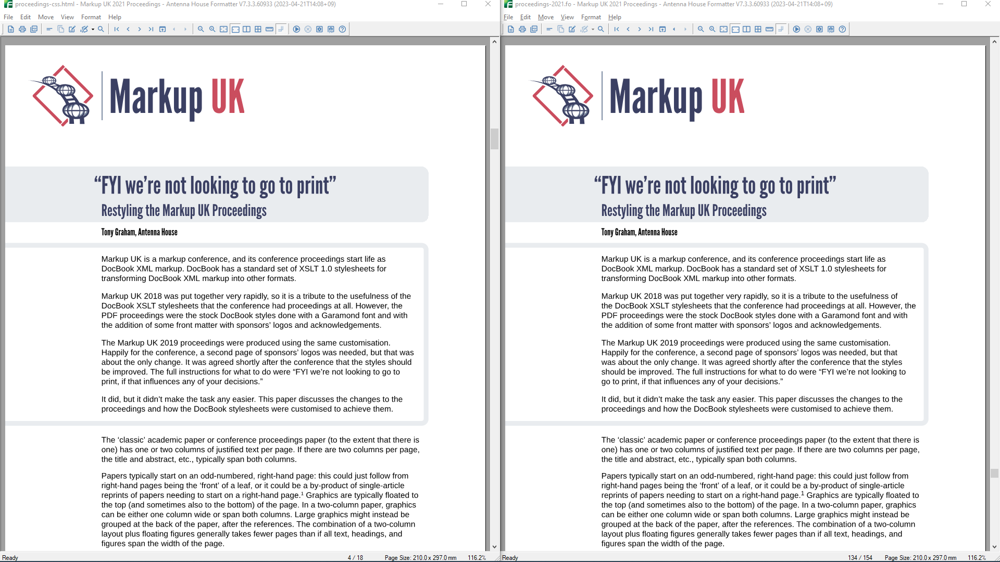

Abstract
Markup UK conference proceedings start life as DocBook XML markup and are formatted as PDF using XSL-FO that is generated by the DocBook XSLT 1.0 stylesheets.
This paper discusses formatting the conference proceedings using CSS styles from the DocBook “xslTNG” XSLT 3.0 stylesheets.
Table of Contents
As explained in We’re Not Looking to go to Print [GRAHAM2021], the 2018 and 2019 proceedings used almost stock XSLT 1.0 stylesheets to generate XSL-FO that was formatted using Antenna House Formatter, and the styles were then revised for Markup UK 2021 (and later) by using a more substantive customisation of the XSLT 1.0 stylesheets. Recreating the proceedings using CSS styles was an experiment in using CSS to format DocBook and, as it turned out, the first real test for using the DocBook xslTNG stylesheets to generate PDF.
As expected, it is possible to make the CSS version virtually identical to the existing XSL-FO version of a paper.[1]
Figure 1. Paper formatted using CSS (left) and XSL-FO (right)
|  |
[1] For an in-depth analysis of the similarities and differences between CSS and XSL-FO, see the XSL-FO/CSS Comparison available from https://www.antennahouse.com/xsl-fo-css-comparison.